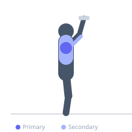
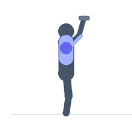

Exercise guide / Alternating Dumbbell Shoulder Press
Alternating Dumbbell Shoulder Press
The alternating dumbbell shoulder press involves pressing one dumbbell overhead while the other remains at shoulder height, then alternating. The alternating pattern keeps one shoulder under constant work while the other rests briefly, extending the time under tension for each shoulder and creating an anti-lateral-flexion demand from the alternating load. It bridges the benefits of unilateral and bilateral pressing by maintaining both shoulder positions throughout the set.
Primary muscles
deltoid anterior
deltoid lateral
Secondary muscles
triceps long head
trapezius upper
Stabilizers
internal oblique
external oblique
Equipment
Dumbbell (Fixed)


Starting position
- Sit or stand with a dumbbell in each hand at shoulder height, palms facing forward or inward. Both dumbbells begin in the press-ready position.
Setup
- Can be performed seated or standing. When standing, the core demand is higher. Count a rep as one press on each side.
Steps
- Step 1: Begin with both dumbbells at shoulder height.
- Step 2: Press the right dumbbell overhead while keeping the left at shoulder height.
- Step 3: As the right descends, begin pressing the left overhead.
- Step 4: Continue alternating in a smooth, see-saw rhythm.
- Step 5: One rep = one press per side.
Coaching cues
- See-saw rhythm — smooth alternation
- Stay upright — no lean
- Full lockout each arm
Breathing
- Breathe naturally with the alternating rhythm — typically exhale on each press.
Range of motion
- Shoulder height to full overhead lockout per arm.
Tempo
- 2-0-2-0 per arm
Common mistakes
- Leaning toward the pressing side — maintain an upright posture
- Letting the resting arm drop below shoulder height between presses
Safety
- If the torso sways significantly, reduce the load
Training
- hypertrophy: 8–12 reps
- hypertrophy: 3–4 sets
- Rest: {'hypertrophy': 90}